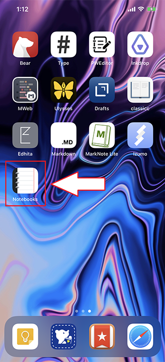
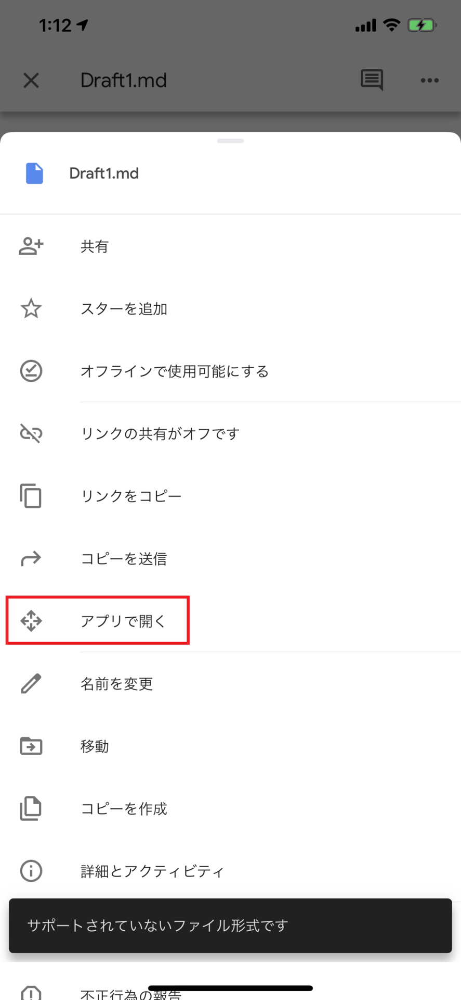
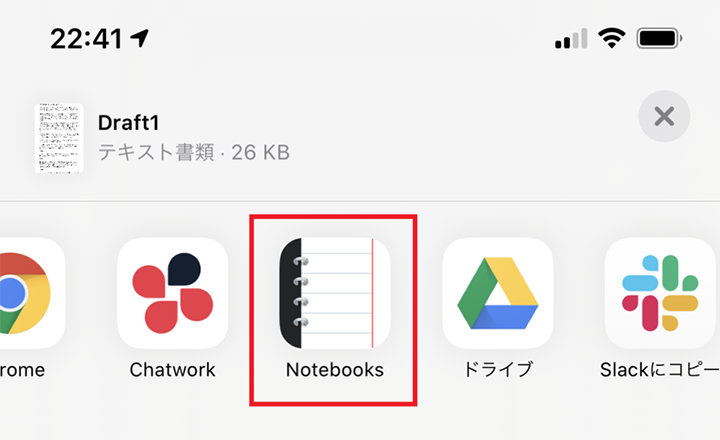
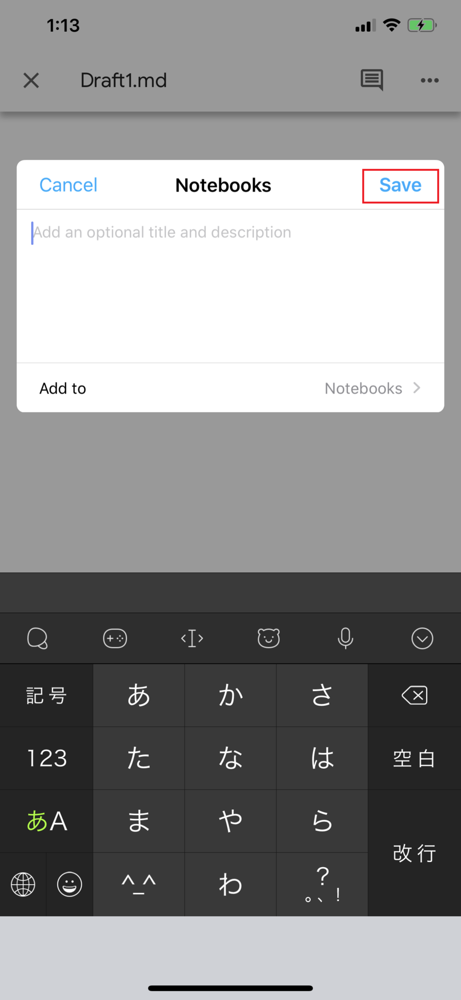
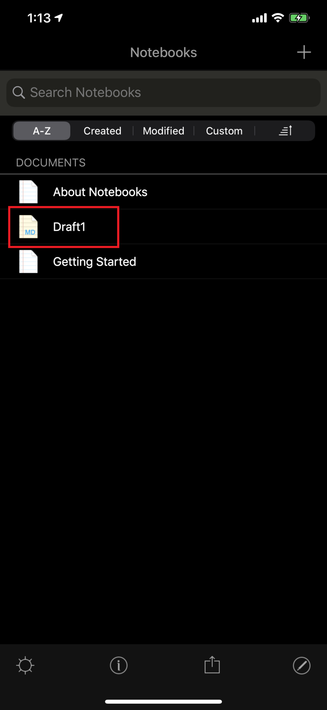
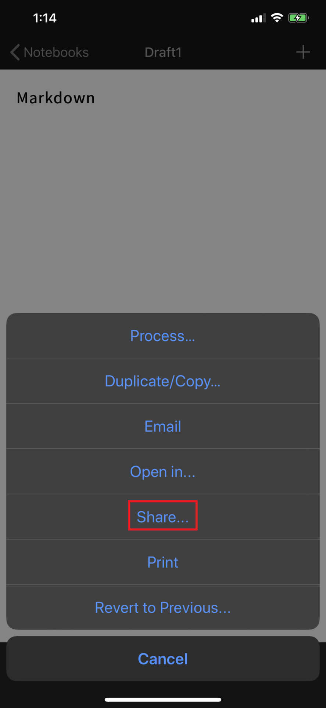
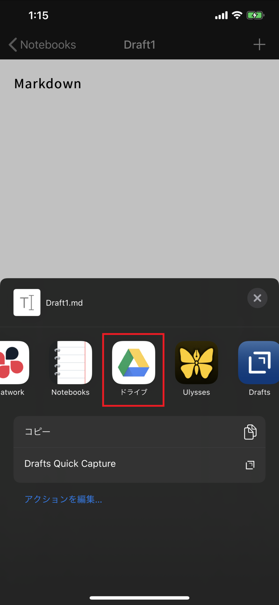
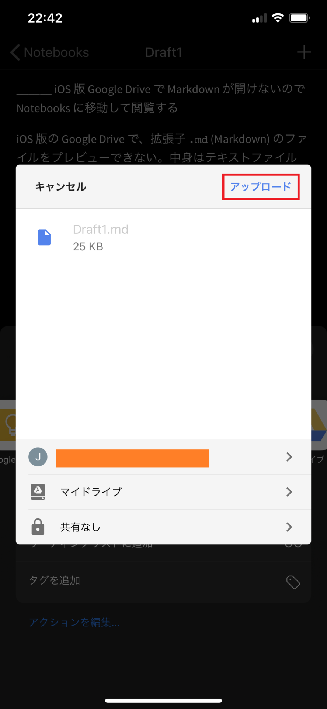

iOS 版 Google Drive で Markdown が開けないので Notebooks というアプリに移動して閲覧する
iOS 版の Google Drive で、拡張子 .md (Markdown) のファイルをプレビューできない。中身はテキストファイルなのに、テキストファイルとしては表示してくれないようだ。
Google Drive から「ファイルのコピーを送信」という操作ができるので、Markdown ファイルを開ける別のアプリに投げれば良いかな、と思ったのだが、意外と Google Drive アプリから Markdown ファイルを送りつけられるアプリがなくて結構探した。
一番お手頃なところでいくと、Evernote アプリに転送すれば、Markdown ファイルを添付したノートが作成されるので、Evernote 内で添付ファイルをタップすれば Markdown がプレビューできる。しかしコレだと、中身を見るためだけに Markdown を添付したノートが作成されてしまい、少々目障りだ。
とりあえず見るだけなら Evernote でも良いが、もう少し見やすいのがいいなーと思い探していると、ちょうど良いアプリがあった。それが Notebooks for iPhone だ。

↑このアイコンのアプリ。
Google Drive → Notebooks への転送
Google Drive アプリで Markdown ファイルを開こうとすると、「サポートされていないファイル形式です」と表示され、プレビューしてもらえない。ココで「アプリで開く」を選択する (「コピーを送信」でも良いかも)。

すると一覧に Notebooks が出ているので、選択する。

このまま Notebooks に転送する。

Notebooks アプリを開くと、Notebooks 内で管理するノート1枚として取り込まれ、Markdown 書式がキレイにパース表示されている。

Notebooks → Google Drive への転送
Notebooks で編集したノートを Markdown ファイルとして Google Drive に送り返すこともできる。右下の共有アイコンから「Share...」を選択する。

一覧に Google Drive が表示されるのでコレを選択する。

あとは配置先などを選択すれば OK。

不要な .txt テキストファイルも送られてしまうこともあるが、コレくらいなら転送後に Google Drive 側で削除すればよかろう。
このように、双方向に Markdown ファイルがやりとりでき、キレイにプレビューできた。Notebooks ナイス。